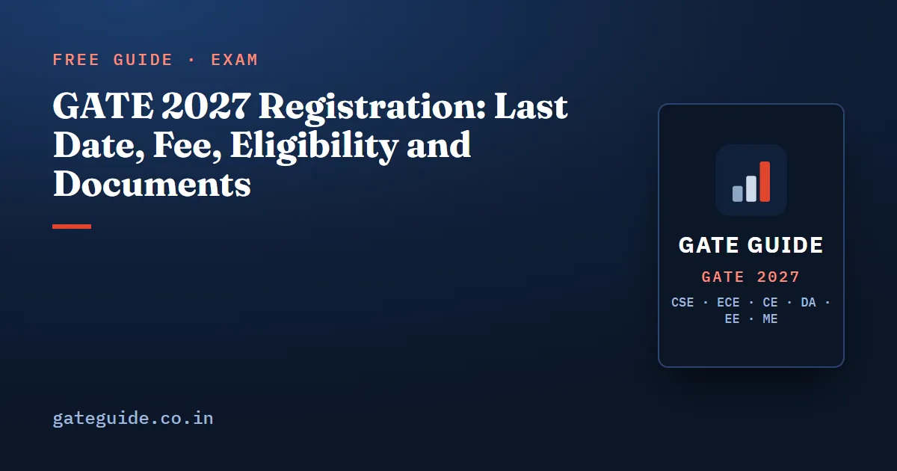

GATE 2027 Registration: Last Date, Fee, Eligibility and Documents

GATE 2027 registration opened on 2 September 2026 on GOAPS. The regular window, first due to close on 27 September, has been extended to 5 October 2026 without a late fee. You can still apply until 12 October 2026 by paying a late fee. This guide covers the official fees, who is eligible, the DigiLocker documents you need and a checklist to finish the form without errors.
In this guide
Key takeaways
- Apply on GOAPS by 5 October 2026 to pay the regular fee. The extended deadline of 12 October 2026 costs ₹500 more.
- At the regular rate, one paper costs ₹1,000 for female, SC, ST and PwD candidates and ₹2,000 for everyone else.
- You are eligible from the 3rd year of any undergraduate degree, or after completing a government-approved degree. No age limit is stated.
- DigiLocker registration is mandatory for Indian nationals, and your personal details are fetched from it.
- SC, ST and PwD certificates must be saved in DigiLocker with the exact file names GATE asks for.
- A CS candidate may add one second paper from DA, EC, GE, MA, ME, PH, RA or ST.
GATE 2027 registration dates
Registration runs on GOAPS, the GATE Online Application Processing System. The dates that matter for the form:
- 2 September 2026: registration opened.
- 5 October 2026: regular closing date, without late fee (extended from 27 September).
- 12 October 2026: extended closing date, with late fee.
- 14–21 October 2026: application rectification window.
After registration, the next official milestones are exam city allotment information on 4 January 2027, the exam on 6–7, 13–14 and 20–21 February 2027, and the result on 19 March 2027. The full calendar, with a plan for the weeks in between, is in GATE 2027 exam dates.
These dates were last checked on gate2027.iitm.ac.in on 1 October 2026, after the organisers extended the deadlines. Confirm them on the official important dates page before you apply. GATE Guide is an independent site and is not affiliated with IIT Madras, IISc or GATE.
GATE 2027 application fee
| Candidate group | One paper, regular | One paper, extended | Two papers, regular | Two papers, extended |
|---|---|---|---|---|
| Female, SC, ST, PwD | ₹1,000 | ₹1,500 | ₹2,000 | ₹2,500 |
| All other candidates, including foreign nationals | ₹2,000 | ₹2,500 | ₹4,000 | ₹4,500 |
Three things to read from this table:
- The late fee is a flat ₹500. Every row goes up by exactly ₹500 in the extended window, whether you take one paper or two.
- The concession covers four groups only. The fee table has two rows. Female, SC, ST and PwD candidates pay the lower fee. Everyone else pays the higher fee, so there is no separate OBC or EWS row in the fee table.
- A second paper costs as much again at the regular rate. Adding a paper adds ₹1,000 for the first group and ₹2,000 for everyone else.
Eligibility for GATE 2027
The official criteria are short. You can apply if any one of these is true:
- You are currently in the 3rd or higher year of any undergraduate degree.
- You have completed any government-approved degree in Engineering, Technology, Architecture, Science, Commerce, Arts or Humanities.
- You are in the 1st or higher year of a master's programme such as M.Sc., M.A. or MCA.
No age limit is stated. Here is how the criteria apply to common situations:
| Your situation | Eligible for GATE 2027? |
|---|---|
| B.Tech or B.E., 2nd year | Not under the stated criteria; eligible from the 3rd year |
| B.Tech or B.E., 3rd or final year | Yes |
| Completed B.Tech, B.E., B.Sc. or another approved degree in the listed fields | Yes |
| M.Sc., M.A. or MCA, 1st year or above | Yes |
| Graduated several years ago | Yes; no age limit is stated |
If your degree or programme does not fit neatly into these lines, check the eligibility section on gate2027.iitm.ac.in or write to the helpdesk before paying.
Choosing your papers: CS alone or with a second paper
GATE 2027 has 30 test papers, and Robotics and Automation (RA) is new this year. A CS candidate may add one second paper from this list: DA, EC, GE, MA, ME, PH, RA or ST.
A second paper is a real decision, not a free extra. It costs more, and every week spent on its syllabus is a week taken from CS. It makes sense if you already study that subject for another reason, or if the second score serves a specific admission or career goal you have checked. If you are unsure, one well-prepared CS paper is usually the better investment.
The CS paper alone is demanding: 65 questions and 100 marks in 3 hours, covering General Aptitude, Engineering Mathematics and the core computer science subjects. The GATE CSE 2027 exam pattern and marking scheme breaks it down. If CS is your only paper, the GATE CSE 2027 book is built for exactly that preparation: 27 years of GATE CS papers analysed, 1,120 questions with worked solutions and 10 full mock tests. For ECE, CE, DA, EE and ME, see the books for every branch.
DigiLocker and documents
GATE 2027 ties the application closely to DigiLocker, so get your documents in order before you open the form.
- DigiLocker registration is mandatory for Indian nationals. Your personal details are fetched from DigiLocker, so check that they are correct before you open the form.
- A live photo is captured during registration. Use a device with a working camera and good light.
- Category certificates go into DigiLocker with fixed names. SC and ST certificates go in the DigiLocker folder named GATE2027, saved as CATEGORY.pdf.
- PwD certificates have their own file names. Use UDID_CERT.pdf or PWD_CERT.pdf.
- Your ID must match on exam day. The same ID verified through DigiLocker must be produced at the exam centre.
| Document | Who needs it | Required name or rule |
|---|---|---|
| DigiLocker account | All Indian nationals | Mandatory; personal details are fetched from it |
| SC or ST certificate | SC and ST candidates | In the DigiLocker folder GATE2027, as CATEGORY.pdf |
| PwD certificate | PwD candidates | UDID_CERT.pdf or PWD_CERT.pdf |
| Photo ID | Everyone | The ID verified through DigiLocker, carried to the centre |
Foreign nationals should follow the instructions on the official website, since the DigiLocker requirement above is stated for Indian nationals.
Step-by-step registration checklist
- Confirm eligibility against the three criteria above.
- Set up DigiLocker and correct any errors in your personal details there first.
- Decide which ID you will carry to the exam centre and verify that same ID through DigiLocker.
- Save your certificates with the exact names: CATEGORY.pdf in the GATE2027 folder for SC or ST, and UDID_CERT.pdf or PWD_CERT.pdf for PwD.
- Choose your paper or papers. CS alone, or CS plus one of DA, EC, GE, MA, ME, PH, RA or ST.
- Register on GOAPS from a device with a working camera for the live photo.
- Pay the fee by 5 October 2026 to avoid the ₹500 late fee.
- Keep a record of your submitted application and payment.
- Note 4 January 2027 for exam city allotment information.
Mistakes to avoid
- Waiting for the extended window. It costs ₹500 more and leaves no margin if something goes wrong on the last day.
- Mismatched details. The form takes your details from DigiLocker. Fix errors at the source instead of hoping to correct them later.
- Wrong certificate file names. CATEGORY.pdf, UDID_CERT.pdf and PWD_CERT.pdf are specific names. Use them exactly.
- Carrying a different ID. The ID verified through DigiLocker is the one to bring to the centre.
- Adding a second paper on impulse. Decide based on your goals and the preparation time you actually have.
- Trusting forwarded dates. Check gate2027.iitm.ac.in, and use the helpdesk at helpdesk@gate.iitm.ac.in or 044-22578200 for genuine problems.
After you register
From the regular closing date of 5 October 2026 to the first exam day on 6 February 2027 there are 124 days, about 18 weeks. That is enough time for a full cycle of subject study, mock tests and revision, if you start the week you submit the form.
Two things to read next: the GATE CSE 2027 preparation strategy for a week-by-week plan, and GATE 2027 by IIT Madras for what this year's organizing institute means for the paper. The form is one task; the next 18 weeks decide your score.
Frequently asked questions
What is the last date for GATE 2027 registration?
IIT Madras has extended the regular GATE 2027 registration window on GOAPS to 5 October 2026, without a late fee; it was originally due to close on 27 September. After that, the extended window stays open until 12 October 2026, but you pay a late fee of ₹500 over the regular amount. Confirm both dates on gate2027.iitm.ac.in before you apply.
What is the GATE 2027 application fee?
Female, SC, ST and PwD candidates pay ₹1,000 for one paper, or ₹1,500 in the extended window. All other candidates, including foreign nationals, pay ₹2,000, or ₹2,500 in the extended window. Two papers cost ₹2,000 or ₹2,500 for the first group and ₹4,000 or ₹4,500 for everyone else.
Is DigiLocker mandatory for GATE 2027?
Yes, for Indian nationals. DigiLocker registration is mandatory and your personal details are fetched from DigiLocker. SC and ST certificates go in a DigiLocker folder named GATE2027 as CATEGORY.pdf, and the ID verified through DigiLocker must be produced at the exam centre.
Can a third-year B.Tech student apply for GATE 2027?
Yes. Candidates currently in the 3rd or higher year of any undergraduate degree are eligible, so third-year and final-year students can apply. A second-year student does not meet this criterion yet. Candidates in the 1st or higher year of M.Sc., M.A. or MCA are also eligible.
Is there an age limit for GATE 2027?
No age limit is stated in the GATE 2027 eligibility criteria. Eligibility depends on your year of study or on having completed a government-approved degree in Engineering, Technology, Architecture, Science, Commerce, Arts or Humanities. Check the official website if your case is unusual.
Can I write two papers along with GATE CSE 2027?
Yes. A CS candidate may choose one second paper from DA, EC, GE, MA, ME, PH, RA or ST. Robotics and Automation (RA) is new for 2027. A second paper raises the fee, so decide only if you can prepare for both syllabi properly.
Sources
- GATE 2027 official website (IIT Madras)
- GATE 2027 important dates (official)
- GATE 2027 application fees (official)
- GATE 2027 exam papers and syllabus (official)
Dates, fees and the syllabus are set by the GATE 2027 organising institute and can change. Always confirm at gate2027.iitm.ac.in.